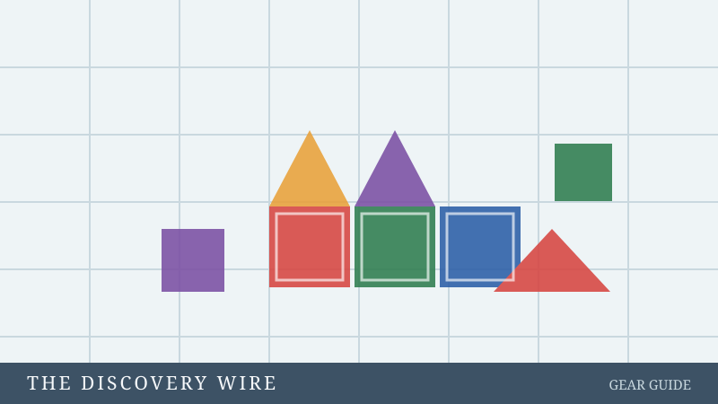

November 15, 2026 · 3 min read
The Magnetic Tiles That Started It All: Magna-Tiles Classic 32-Piece

Illustration by The Discovery Wire
The Magnetic Tiles That Started It All: Magna-Tiles Classic 32-Piece
Our Snap Circuits guide covered the older-kid end of STEM toys. This one is for the younger end of the same question — the parents asking what a three-, four-, or five-year-old can build with before circuits and reading-heavy kits make sense. The default answer for twenty years has been the Magna-Tiles Classic 32-Piece Set (model 2132), the original magnetic building tile set.
Full honesty up front: this is a specs-and-track-record guide, not a hands-on lab test. We haven't run one through a toddler gauntlet for this article. But few toys have a more public track record — this set has been sold since 2005, and it effectively created the magnetic-tile category that now fills whole store aisles.
What it is
- 32 translucent magnetic tiles — squares and triangles in clear colors that click together along every edge. No instructions, no right answers, no batteries: the geometry is the curriculum.
- Rated for ages 3 and up by the manufacturer, and genuinely playable at that age — the tiles are big, the magnets are sealed inside the plastic, and a "build" can be a flat pattern on the fridge or a wobbly tower that falls over to general applause.
- A STEM-certified design (the set carries STEM.org certification) — the learning claim here is modest and real: shapes, symmetry, counting, and early engineering instincts, learned by hand.
- The starter size, on purpose. Thirty-two pieces is enough for houses, rockets, and ramps, small enough to clean up in one scoop, and the set is fully compatible with the bigger Magna-Tiles sets if it takes off.
What it isn't
- It is not the cheap version of itself. The aisle is full of imitator tiles at half the price; the original's premium buys the sealed, reinforced construction and magnets strong enough to hold a tower. Whether that premium is worth it is a real question — but the category leader is the leader for durability reasons, not marketing ones.
- It is not a baby toy. The 3+ rating is real: toddlers under three get the hand-me-down set under supervision, not their own box. Small magnets are never a joke, which is exactly why the sealed-tile construction matters.
- It will not be enough forever. A committed five-year-old builder will burn through 32 pieces in one castle. Treat this set as the audition, not the collection.
Our verdict
If the Snap Circuits kit is the right first STEM toy at eight, the Classic 32 is the right one at three. Twenty years on the market, one job — open-ended building a preschooler can actually do — and a construction standard the imitators are still chasing. As a first set or a first gift, it's the safest recommendation in its category.
See the Magna-Tiles Classic 32-Piece Set on Amazon
As an Amazon Associate I earn from qualifying purchases. Buying through that link costs you nothing extra and keeps this page running. One more honest note: check your local library before buying — many now loan building sets, and an afternoon with a borrowed set tells you more than any guide, including this one.
Source: MAGNA-TILES (manufacturer specifications, via the Amazon product listing) — read the original report
← Back to latest stories